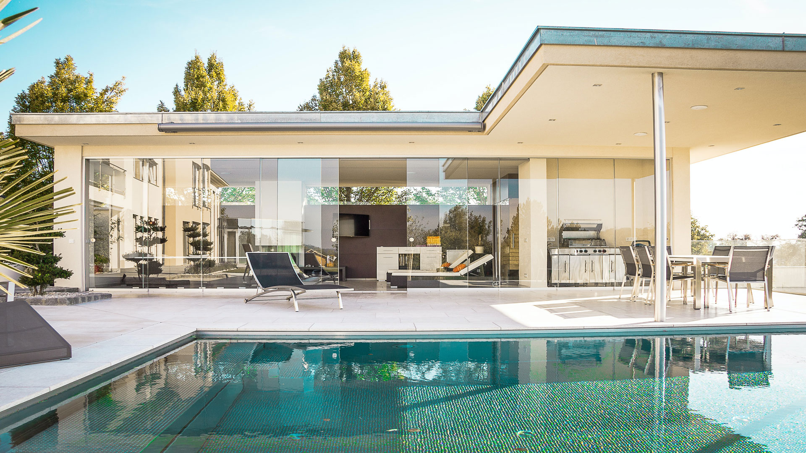
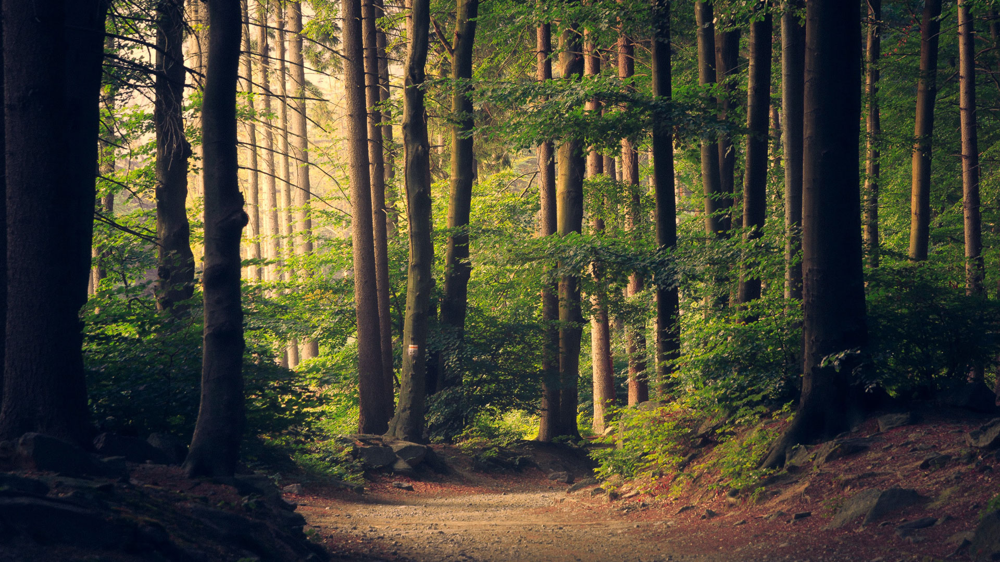
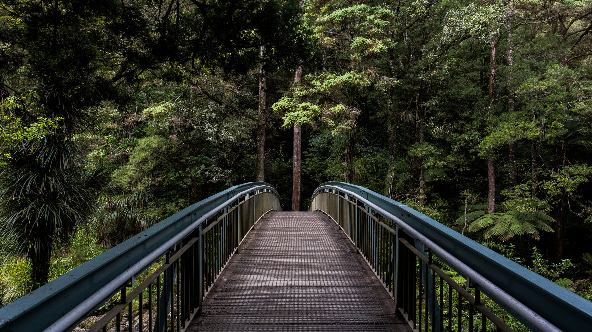

We love to build modernist homes that connect with and celebrate their natural environment.
Our first home in 2001 was a personal retreat we named Barerock. An all-glass pavilion, flat roof, post and beam structure. The home was off-grid and sustainable, giving us a sense of independence and a synonymous relationship with our natural surroundings.

We drew design inspiration from the timeless mid-century “International style” architecture alongside the 1945 – 1966 California Case Study House Program. Barerock was a phenomenon – attracting the attention of architecture, lifestyle and ecological publications worldwide. Like minded people began contacting us and MAFCOhouse was born.
Since 2005, MAFCOhouse has designed and built over 40 homes in Canada. We recently formed Mh US with plans in the works for a model home in the mid-century mecca – Palm Springs, California.

Our ideals remain the same – our inspiration now is you.
